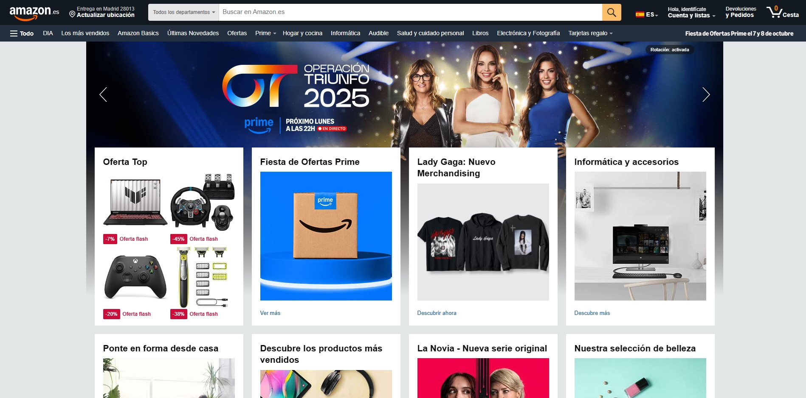

Nowadays
La página se muestra sobria a la vez que llamativa, ya que los iconos son grandes a la vez que sencillos y se elimina los espacios en blanco innecesarios. No hay sobrecarga de información y se juega con los contrastes. A su vez, los menús son más reducidos para evitar la sobrecarga y generar una sensación de orden y sencillez
04/02/2025

La página muestra demasiados espacios vacíos innecesarios, mientras que los espacios con información estan sobrecargados de elementos, lo que causa un agobio al cliente. Además, los eloementos y textos son demasiado pequeños, lo que se hace incómodo a la vista. Tampoco se juega con el contraste